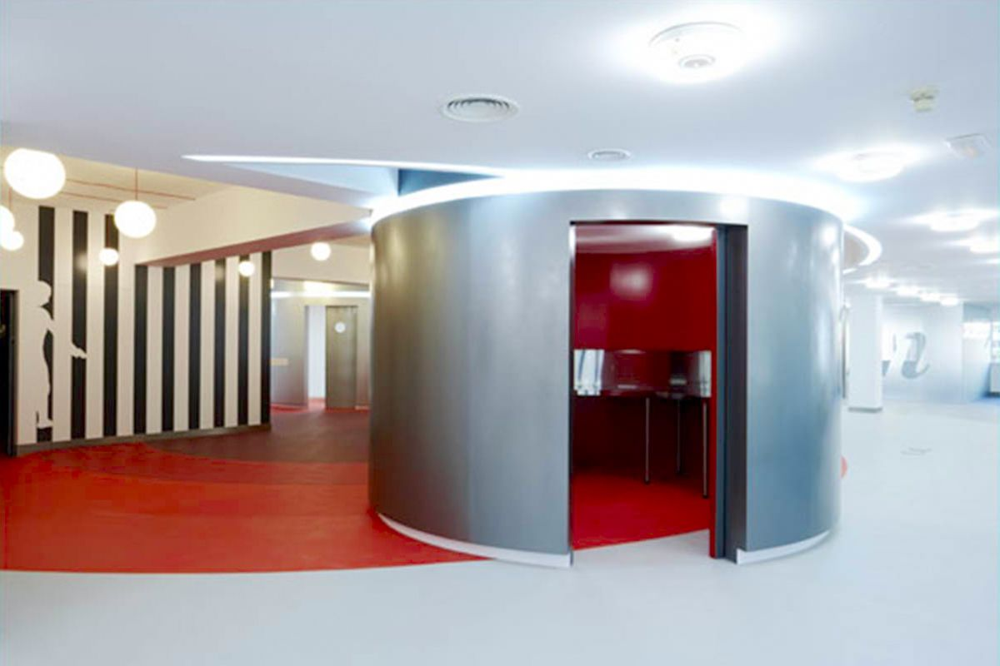
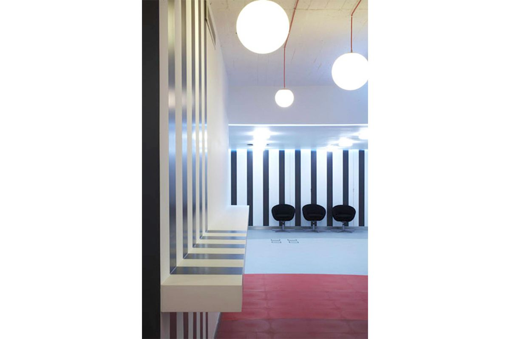

|
2003 |
Agencia publicidad MomentumTrabajar en un ambiente agradable es sinónimo de buen rendimiento. Esta es una lección que han asimilado los directivos de muchas compañías que se lanzan a renovar sus espacios laborales para incorporar a ellos las últimas tendencias. En este caso, en las oficinas McCann Erickson-Momentum, en Madrid, un gran espacio con techos bajos se apostó por la curva como elemento principal para dotar de movimiento y dinamismo al conjunto. Se decidió crear estancias cilíndricas que aportaran una energía extra al espacio y disponerlas en el centro de cada planta. Los colores rojo y gris diferencian los parámetros verticales y horizontales, mientras que las luces, estratégicamente situadas, acentúan los contrastes materiales y formales. En una empresa dedicada a la organización de eventos y con mucho movimiento, se quiso imprimir este ritmo de trabajo también en la decoración a base de siluetas y líneas serpenteantes. El efecto final es un poco Pop-art o el antiguo teatro de vanguardia y hace pensar en una especie de puesta en escena, un diseño adecuado para el tipo de trabajo que se desarrolla en la agencia, donde se organizan eventos que se convierten en representaciones. Sin duda, este proyecto se remonta a la filosofía de diseño transitiva: la creación de espacios significativos a través de referencias al pasado. La parte más pública de un taller, la recepción, se resalta con un círculo rojo que actúa como un centro o bien un epicentro. Se puede ver como una especie de plaza para la forma en que se utiliza; un lugar de intercambios, un preámbulo, para continuar con la referencia literaria. |

 |